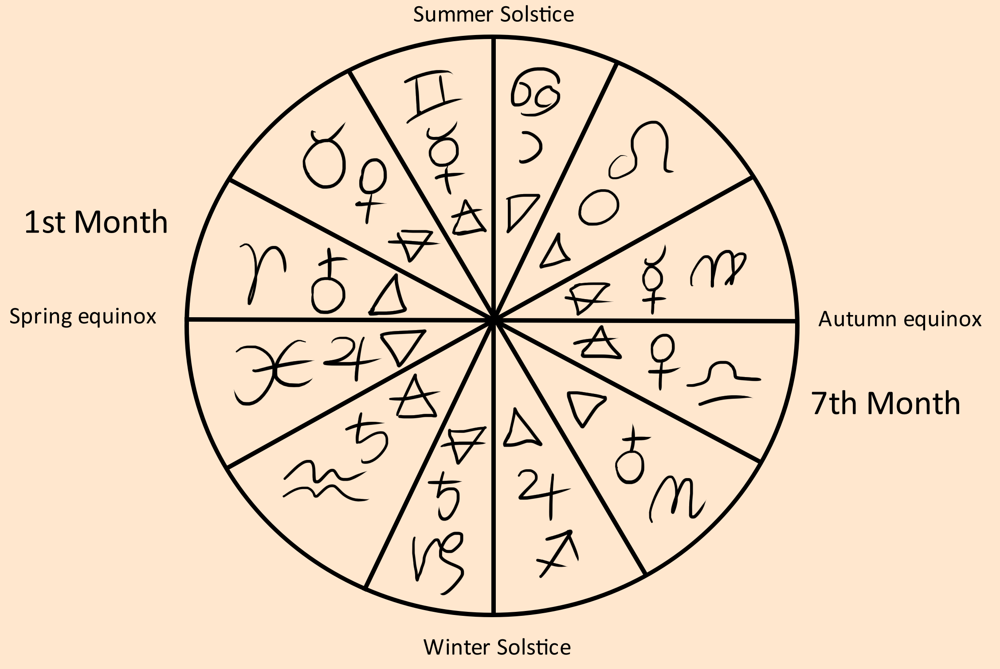

If you learn the four seasons then you can put 3 months in each season. If you learn the 7 planets, you can apply it to the zodiac and learn each months minor archetype.
Geometry

Correspondences
| Aries | Taurus | Gemini | Cancer | Leo | Virgo | Libra | Scorpio | Sagittarius | Capricorn | Aquarius | Pisces |
|---|---|---|---|---|---|---|---|---|---|---|---|
| Wolf | Cow | Parrot | Crab | Lion | Human | Raven | Snake | Horse | Goat | Eagle | Fish |
| Head | Throat | Shoulders | Breast | Chest | Belly | Back | Genitals | Thighs | Knees | Ankles | Feet |
| Warrior | Builder | Writer | Caretaker | King | Maid | Diplomat | Witch | Traveler | Farmer | Pioneer | Diviner |